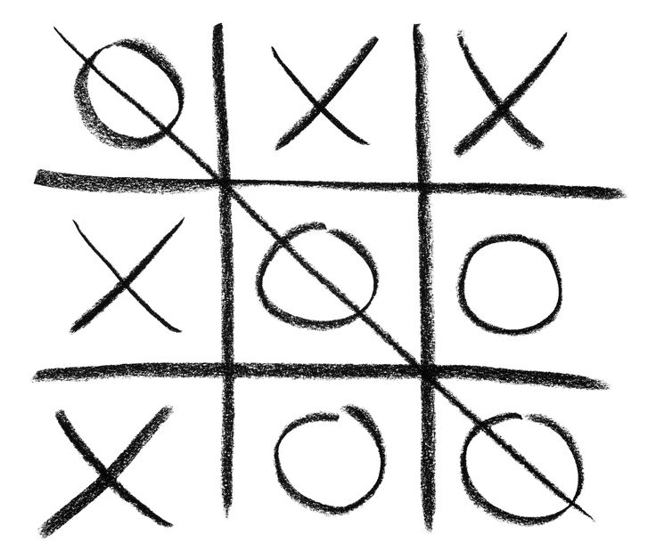
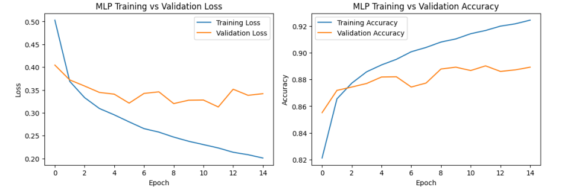

Tic_Tac_Toc
a supervised machine learning model to predict optimal next moves by training on game-state datasets labeled via a Minimax solver
Project date:

a supervised machine learning model to predict optimal next moves by training on game-state datasets labeled via a Minimax solver
Project date:

Implemented and evaluated a fully-connected MLP and a Convolutional Neural Network (CNN) for image classification on the Fashion-MNIST dataset
Project date:
